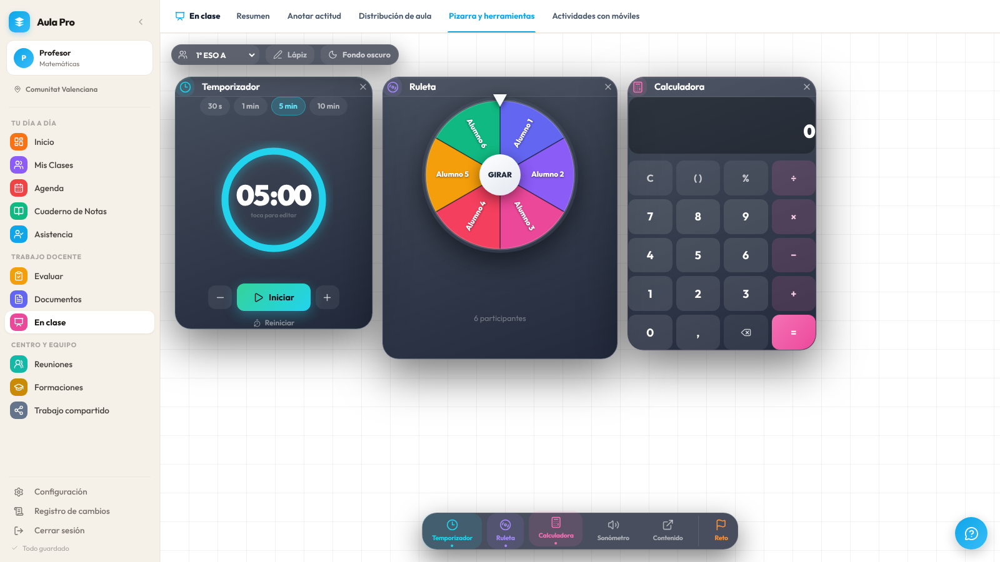

Pizarra y herramientas: propuesta de aspecto
Una propuesta para llevar la pizarra al mismo estilo cálido del resto de la app: tarjetas blancas sobre fondo crema, el cuadradito de color de cada herramienta y los mismos botones. Es una maqueta con los colores y la letra reales de AulaPro; todavía no hay nada cambiado en la app.
1. Cómo se ve hoy

Captura real de la app con los datos de ejemplo.
Lo que desentona
- Dos estilos a la vez. El resto de la app es crema, blanco y violeta; los paneles son de cristal azul marino con sombras negras muy fuertes.
- Cada panel va a su aire. Tres alturas distintas y bordes sin alinear: parece un montón de ventanas, no una pizarra ordenada.
- Hueco muerto en la ruleta. El círculo no crece con el panel y queda un vacío grande debajo, justo donde ahora sale quién ha salido.
- Letra pequeña para proyectar. Los 5 min, «6 participantes» o «toca para editar» no se leen desde el fondo del aula.
Lo que ya funciona y se queda
- Mover y cambiar de tamaño cada panel, y el dock de abajo para abrirlos.
- Los colores propios de cada herramienta (ahora salen en el dock, pero no en el panel).
- La pizarra clara u oscura y el lápiz.
- Todo el comportamiento: temporizador, giro, calculadora, medidor, contenido web y reto.
2. La propuesta, con la pizarra clara
Las tarjetas son blancas con borde crema, como las del Inicio y los resúmenes. Cada una lleva en la cabecera el cuadradito de color de su herramienta, como el menú lateral.
Maqueta (HTML y CSS con los colores de la app). Los números rosas se explican debajo.
3. La misma, con la pizarra oscura
Con «Fondo oscuro» las tarjetas toman los colores del modo oscuro de la app (los mismos que ya usa), así que no hay un tercer estilo.
4. Qué cambia, punto por punto
| Nº | Cambio | Por qué |
|---|---|---|
| 1 | Tarjetas claras | Blancas, borde crema, radio 22 y sombra suave. Mismo lenguaje que el resto de la app, y se leen mejor con el proyector encendido y la luz del aula. |
| 2 | Cabecera con cuadradito de color | La herramienta se reconoce por su color en el panel y en el dock (reloj azul, ruleta violeta, calculadora rosa, sonómetro verde…). Aparece un asa de seis puntos para arrastrar, que hoy no se ve. |
| 3 | Temporizador que avisa con el color | El anillo avanza con el tiempo que queda y pasa de azul a ámbar y a rojo en los últimos 20 % y 10 segundos. El alumnado lo entiende sin leer las cifras. |
| 4 | Ruleta más grande y con memoria a la vista | El círculo ocupa el panel. Debajo del nombre, «Quedan 4 de 6», «Reiniciar lista» y quién ya ha salido, tachado: enseña la nueva memoria en vez de esconderla. |
| 5 | Calculadora de la app | Teclas blancas, operaciones en violeta suave y «=» en el azul de acento. Pantalla con la operación en pequeño y el resultado grande. |
| 6 | Dock y barra superior claros, con nombre | El dock pasa de píldora oscura a tarjeta clara con cuadradito de color; el punto marca lo abierto. La barra superior usa los chips de la app. |
| 7 | Botón «Ordenar» (nuevo) | Coloca los paneles abiertos en fila, alineados arriba y con la misma altura. Es opcional: el que prefiera dejarlos a su gusto sigue pudiendo. |
| 8 | Letra mínima de 14 px en los paneles | Para leerse desde el fondo. Se suma al «Tamaño de las letras» de Configuración, que ya existe. |
5. Lo que no se toca
- Ninguna función ni dato: es solo aspecto (CSS y estructura de los paneles en
SecClassroom.tsxyindex.css). - Nada de lo que promete la web cambia, así que no hay que tocar privacidad ni condiciones. Sí habría que repetir las capturas de la web (
scripts/web/capturar.mjs), porque la pizarra sale en la portada y en la demo. - Las ventanas siguen moviéndose y cambiando de tamaño igual; en el móvil la X sigue respondiendo (
cancel=".widget-cerrar").
6. Lo que necesito que decidas
- ¿Tarjetas claras o te gusta el cristal oscuro? Mi recomendación es claras: coherencia con la app y mejor lectura proyectado. Si prefieres conservar el cristal para el fondo oscuro, se puede dejar solo allí.
- ¿Añadimos «Ordenar»? Es lo único que añade un botón nuevo.
- ¿Los colores del dock por herramienta, o todo en el violeta de acento? Yo usaría los colores, igual que el menú lateral.